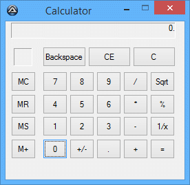
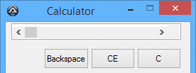
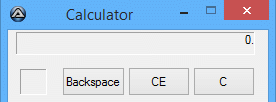

В этом уроке мы попробуем создать простой калькулятор, как тот, что встроен в MS-Windows. Используя возможности GUI AutoIt.
Предполагается, что вы уже знакомы с созданием и запуском скриптов AutoIt, как показано в примере.
Создание диалога GUI – (Дизайн)
В этой части мы начнём с создания диалога GUI. Хорошо иметь представление о дизайне на основе функциональности нашей программы.
То есть, сколько и какие типы элементов управления нам потребуются. В этом случае мы используем тот же дизайн, что Windows Calc.
На рис. 1 видно, как будет выглядеть наш калькулятор в конце этой части.
Рис. 1

Чтобы начать создание диалога, сначала подключим несколько библиотек, которые объявляют константы, используемые в нашем диалоге. Эти константы содержат числовые значения стилей и параметров, определяющих внешний вид каждого элемента управления, а также значения для событий и состояний. (Обычно GUIConstantsEx.au3 уже встроена и находится в папке установки AutoIt). Далее мы увидим, как их применять, а пока подключим эту библиотеку, написав в скрипт следующие строки:
#include <EditConstants.au3>
#include <GUIConstantsEx.au3>
#include <StaticConstants.au3>
#include <WindowsStylesConstants.au3>
GUICreate("Calculator", 260, 230)
$idBtn1 = GUICtrlCreateButton("1", 54, 138, 36, 29)
Как я уже говорил, это делает код более понятным.
; Кнопки цифр
Local $idBtn0 = GUICtrlCreateButton("0", 54, 171, 36, 29)
Local $idBtn1 = GUICtrlCreateButton("1", 54, 138, 36, 29)
Local $idBtn2 = GUICtrlCreateButton("2", 93, 138, 36, 29)
Local $idBtn3 = GUICtrlCreateButton("3", 132, 138, 36, 29)
Local $idBtn4 = GUICtrlCreateButton("4", 54, 106, 36, 29)
Local $idBtn5 = GUICtrlCreateButton("5", 93, 106, 36, 29)
Local $idBtn6 = GUICtrlCreateButton("6", 132, 106, 36, 29)
Local $idBtn7 = GUICtrlCreateButton("7", 54, 73, 36, 29)
Local $idBtn8 = GUICtrlCreateButton("8", 93, 73, 36, 29)
Local $idBtn9 = GUICtrlCreateButton("9", 132, 73, 36, 29)
Local $idBtnPeriod = GUICtrlCreateButton(".", 132, 171, 36, 29)
; Кнопки памяти
Local $idBtnMClear = GUICtrlCreateButton("MC", 8, 73, 36, 29)
Local $idBtnMRestore = GUICtrlCreateButton("MR", 8, 106, 36, 29)
Local $idBtnMStore = GUICtrlCreateButton("MS", 8, 138, 36, 29)
Local $idBtnMAdd = GUICtrlCreateButton("M+", 8, 171, 36, 29)
; Операторы
Local $idBtnChangeSign = GUICtrlCreateButton("+/-", 93, 171, 36, 29)
Local $idBtnDivision = GUICtrlCreateButton("/", 171, 73, 36, 29)
Local $idBtnMultiplication = GUICtrlCreateButton("*", 171, 106, 36, 29)
Local $idBtnSubtract = GUICtrlCreateButton("-", 171, 138, 36, 29)
Local $idBtnAdd = GUICtrlCreateButton("+", 171, 171, 36, 29)
Local $idBtnAnswer = GUICtrlCreateButton("=", 210, 171, 36, 29)
Local $idBtnInverse = GUICtrlCreateButton("1/x", 210, 138, 36, 29)
Local $idBtnSqrt = GUICtrlCreateButton("Sqrt", 210, 73, 36, 29)
Local $idBtnPercentage = GUICtrlCreateButton("%", 210, 106, 36, 29)
Local $idBtnBackspace = GUICtrlCreateButton("Backspace", 54, 37, 63, 29)
Local $idBtnClearE = GUICtrlCreateButton("CE", 120, 37, 62, 29)
Local $idBtnClear = GUICtrlCreateButton("C", 185, 37, 62, 29)
Local $idEdtScreen = GUICtrlCreateEdit("0.", 8, 2, 239, 23)
Local $idLblMemory = GUICtrlCreateLabel("", 12, 39, 27, 26)
Local $msg
Do
$msg = GUIGetMsg()
Until $msg = $GUI_EVENT_CLOSE
Рис. 2

Для этой части нам нужно изменить только две строки кода.
Первое изменение: в первом дополнении мы добавим в строку переменной $idEdtScreen определение для элемента управления (Edit) с режимом только для чтения ($ES_READONLY) и выравниванием вправо ($ES_RIGHT), чтобы объединить
эти две переменные с помощью функции BitOR() как показано в строке кода ниже. Мы также добавим $WS_EX_STATICEDGE к параметру расширенного стиля (exStyle), чтобы придать границе углублённый вид. Для справки по таблице стилей элемента управления EDIT нажмите здесь. (для
подробного объяснения каждого стиля).
Local $idEdtScreen = GUICtrlCreateEdit("0.", 8, 2, 239, 23, BitOR($ES_READONLY, $ES_RIGHT), $WS_EX_STATICEDGE)
Local $idLblMemory = GUICtrlCreateLabel("", 12, 39, 27, 26, $SS_SUNKEN)
После внесения этих изменений попробуйте запустить скрипт. Изменения повлияют на внешний вид, показанный на рис. 3, теперь наш калькулятор выглядит как на рис. 1 в начале. Вы также можете посмотреть как справку.
Рис. 3

В качестве упражнения попробуйте добавить $BS_FLAT к параметру стиля некоторых кнопок, и вы увидите плоский стиль оформления.